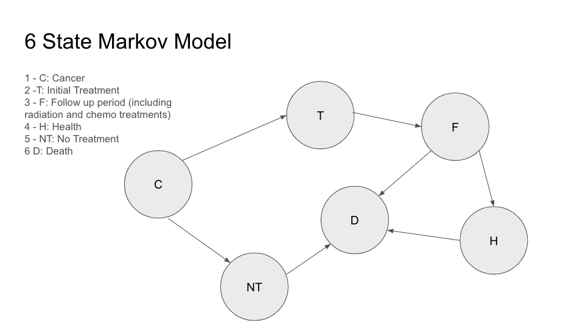
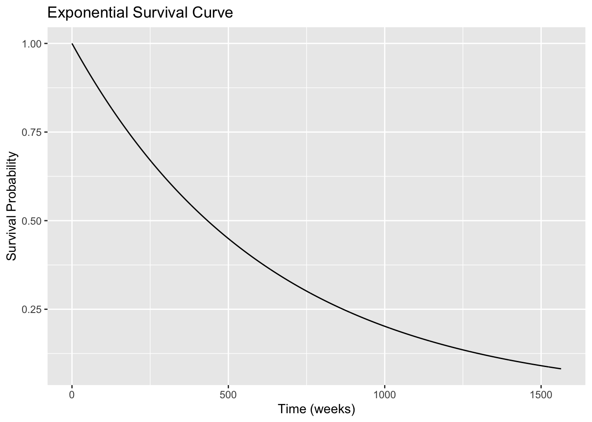

Code
P5Y <- .659
lambda <- -log(P5Y) / (5*52.14)
lambda[1] 0.001599661This document presents a very simple Markov model of a patient’s progression through the states of head and neck cancer treatment. The model is constructed from the patient’s point of view and is intended to be used as an aid in making the decision as to whether a patient who has already been diagnosed with head and neck cancer should undergo treatment. The model is structured as a “Negative Utility” model and is based on a Markov chain with six states: Cancer (C), Treatment (T), Follow-up (F), Health (H), No Treatment (NT), and Death (D). Penalties based on medical conditions and adverse effects associated with each state are computed.
The result of the model is an estimate of how long a patient is expected to survive in each health state, along with the expected penalties associated with each state. The model is based on a number of assumptions and simplifications, and should not be used as a substitute for professional medical advice.

The following tables come from the paper *Changes in Survival in Head and Neck Cancers in the Late 20th and Early 21st Century: A Period Analysis by Pulte & Brenner](https://pmc.ncbi.nlm.nih.gov/articles/PMC3228039/pdf/onc994.pdf)
The hazard rate is the probability of dying in a given week. The probability over all age groups of surviving for 5 years given by Pulte & Brenner is .659. Using this we calculate the hazard rate and an exponential survival curve.
P5Y <- .659
lambda <- -log(P5Y) / (5*52.14)
lambda[1] 0.001599661The mean survival time in weeks is given by:
E_surv <- 1/lambda
E_surv[1] 625.1323The exponential survival curve shown in the following figure may be used as a rough check on the reasonableness of the transitions probabilities that drive the Markov model below. We need more than one data point to adequately model transition probabilities.
S <- function(t, lambda) {
exp(-lambda * t)
}
t <- seq(0, 30*52.14, by = 1)
df <- data.frame(t , S = S(t, lambda))
ggplot(df, aes(x = t, y = S)) +
geom_line() +
labs(title = "Exponential Survival Curve", x = "Time (weeks)", y = "Survival Probability") 
states <- c("C", "T", "F", "H", "NT", "D")
p12 = 0.9
p22 = 0.4
p23 = 1 - p22
p33 = 0.6
p36 = 0.001
p34 = 1 - (p33 + p36)
p46 = 0.0005
p44 = 1 - p46
p56 = 0.01
p55 = 1 - p56
P = matrix(c(
0.0, p12, 0.0, 0.0, 1-p12, 0.0,
0.0, p22, p23, 0.0, 0.0, 0.0,
0.0, 0.0, p33, p34, 0.0, p36,
0.0, 0.0, 0.0, p44, 0.0, p46,
0.0, 0.0, 0.0, 0.0, p55, p56,
0.0, 0.0, 0.0, 0.0, 0.0, 1.0
), nrow = length(states), byrow = TRUE)
colnames(P) <- states
rownames(P) <- states
rowSums(P) C T F H NT D
1 1 1 1 1 1 P C T F H NT D
C 0 0.9 0.0 0.0000 0.10 0e+00
T 0 0.4 0.6 0.0000 0.00 0e+00
F 0 0.0 0.6 0.3990 0.00 1e-03
H 0 0.0 0.0 0.9995 0.00 5e-04
NT 0 0.0 0.0 0.0000 0.99 1e-02
D 0 0.0 0.0 0.0000 0.00 1e+00Q is the submatrix of P consisting of the transitive probabilities of transitive states.
states_Q <- c("C", "T", "F", "H", "NT")
P_v <- as.vector(t(P))
Q_v <- P_v[c(1:5, 7:11, 13:17, 19:23, 25:29)]
Q <- matrix(Q_v,nrow = length(states_Q), byrow = TRUE)
colnames(Q) <- states_Q
Q C T F H NT
[1,] 0 0.9 0.0 0.0000 0.10
[2,] 0 0.4 0.6 0.0000 0.00
[3,] 0 0.0 0.6 0.3990 0.00
[4,] 0 0.0 0.0 0.9995 0.00
[5,] 0 0.0 0.0 0.0000 0.99The entry \(n_{ij}\) of N gives the expected number of times that the process will visit the transient state \(s_j\) if it is started in the transient state \(s_i\). For a discrete time Markov chain where the basic time between transitions is one week, then \(n_{ij}\) may also be interpreted as the expected number of days that the process will spend in state \(s_j\) if it is started in state \(s_i\).
I = diag(nrow(Q))
N = solve(I - Q)
N [,1] [,2] [,3] [,4] [,5]
C 1 1.500000 2.25 1795.5 10
T 0 1.666667 2.50 1995.0 0
F 0 0.000000 2.50 1995.0 0
H 0 0.000000 0.00 2000.0 0
NT 0 0.000000 0.00 0.0 100Let \(t_i\) be the expected number of steps before the chain is absorbed, given that the chain starts in state \(s_i\), and let c be column vector whose entries are all 1. Then \(t = N \cdot c\).
c <- rep(1,5)
t <- N %*% c
# rowSums(N) # alternate calculation
t [,1]
C 1810.250
T 1999.167
F 1997.500
H 2000.000
NT 100.000This is the expected time in each state measured in weeks when the chain starts in state 1.
cat(" Weeks:", round(N[1,],2), "\n",
"Years:", round(N[1,] / 52.14,2)) Weeks: 1 1.5 2.25 1795.5 10
Years: 0.02 0.03 0.04 34.44 0.19The following are adverse effects of head and neck cancer treatment are based on MacMillan Cancer Support:
Penalty<-matrix(c(5,9,0,0,1,
0,0,5,1,3,
0,7,5,1,2,
2,9,5,1,7,
4,8,1,1,7,
4,8,5,1,5,
4,8,5,1,4,
2,8,5,0,0,
0,8,5,1,1,
2,8,5,0,0
), nrow = 10, byrow = TRUE)
rownames(Penalty) <- c("H", "PN", "L", "S", "T", "DW", "DS", "MT", "NS", "HL")
colnames(Penalty) <- states_Q
Penalty C T F H NT
H 5 9 0 0 1
PN 0 0 5 1 3
L 0 7 5 1 2
S 2 9 5 1 7
T 4 8 1 1 7
DW 4 8 5 1 5
DS 4 8 5 1 4
MT 2 8 5 0 0
NS 0 8 5 1 1
HL 2 8 5 0 0The following code normalizes the penalties associated with each health state to the penalty computed for the initial Cancer state. It is intended to convey an idea of the relative intensity of health problems that will persist after treatment, and provide a an aid to a patient who may be considering whether to undergo treatment. The penalties are not intended to be a comprehensive list of all possible adverse effects of treatment, but rather a representative sample of the most common and significant ones.
cs <- colSums(Penalty)
cs_n <- cs/cs[1]
round(cs_n,2) C T F H NT
1.00 3.17 1.78 0.30 1.30 These are the penalties for each of the states except Death normalized to the penalty of the initial Cancer state. They should useful in constructing utilities that could inform a cost model of the expenses to be incurred in each health state.
TP <- N[1,] * cs_n
round(TP,2) C T F H NT
1.00 4.76 4.01 546.46 13.04